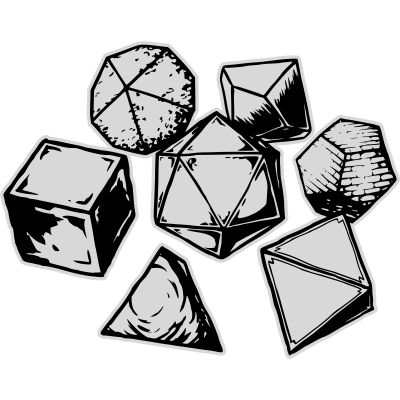

Triheart is a table top role-playing game played with pencils, paper, and dice, with friends or acquaintances around a table. Triheart allows the players to tell stories of the adventures of heroes in a fantasy setting.
Players each play one character within the fantasy world of Triheart. They work together with other players to experience various adventures. How well a player does is not measured in the wealth they acquire or power they wield in the game, but in how memorable the characters and adventures they play are.
The game master, or GM for short, is a role taken by just one participant in a game. The GM is in charge of running everything about the world other than the characters the players are playing: describing the world and playing all characters not being played by other players. The GM is the storyteller and also the final arbiter of rules. Even more final than the rulebook. The GM’s main responsibility is that everyone is having fun, not following a book.
The game uses standard polyhedral dice, available from all good gaming stores and online. The dice are referred to as d4, d6, d8, d10, d12, and d20 after how many sides each kind of die has.
A character in Triheart is any being with agency. This means that all humanoids, animals, monsters, demons, and objects brought to life by magic are characters.
Every character has a number of attributes, that represent various general levels of capability of their person. Attributes are represented as number values where 0 is the average person. Generally, people vary from -6 to +6, with -6 being extraordinarily bad, and +6 human peak performance. Note that attributes are broad, and while someone might have +6 in knowledge, they will not be more knowledgeable than everyone on specific subjects. Here are the 6 attributes in Triheart:
Strength
Sheer physical strength. A character’s ability to use melee weapons, jump, climb, move heavy objects, and perform feats of athleticism.
Agility
Nimbleness, reflexes, and accuracy. A character’s ability to use ranged weapons, perform acrobatics, sneak around, and evade incoming attacks.
Vitality
Ability to withstand injury, poisons, and illness. Determines a character’s health.
Knowledge
Memory and knowledge. A character’s ability to recall information, and the breadth and depth of their general knowledge.
Instinct
Mind and perception. A character’s ability to hear the feintest of sounds, notice the smallest facial expressions, ability to make split second decisions, and the willpower to stay clam under pressure.
Charisma
Social skills and communication. A character’s ability to make themselves be understood, to impress, and to make others believe.
Note that a character’s charisma has nothing to do with how they look but is solely the force of their character in social situations.
Each attribute has associated with it a wide variety of skills. A skill is a more specific application of an attribute. A character can have 0–3 levels in a particular skill, from not trained at all to being an expert. Here are the skills and their associated attributes:
Strength
Agility
Vitality – Vitality has no skills associated with it
Knowledge
Instinct
Charisma
In Triheart the players play human characters. To create a character to play follow these steps in order. Characters should be created together as a group at the table the first time you’re playing. Try to create characters that work well together, have different but complementary strengths and weaknesses.
Your character’s attributes are determined by rolling them one at a time. First, choose the attribute you want to roll. Roll a d6. If the sum of your attributes would go past 6, take the roll as negative number instead.
For example, if you first decide to roll for vitality and get a 4, your vitality is set to +4. Then you decide to roll for agility and get a 3, your agility would be set to -3, since 4+3 would go over 6. Third you might roll for knowledge and get a 5, and your knowledge would be set to +5, since 5+4-3 is not more than 6. Keep doing this until you have rolled all of your attributes.
If this seems confusing, open the Triheart Character Sheet web app and click “Roll attributes” to do it digitally.
Your health and maximum health are set to 20 + 2 × vitality. If you have -3 vitality, for example, your health would be 14, since it’s 20 + 2 × (-3) = 20 - 6.
Pick the class you want your character to be from the list of classes. Your class will give you an idea of what kind of skills, items, values, and characteristics your character might have.
You may distribute up to 10 levels of skills total. You can put anywhere from 0 to 3 into each skill in any way you want, as long as you have 10 levels total.
Choose your character’s values. You should choose at least one personal and one universal value to begin with.
Choose any starting items you think your character would have. Think about what your character’s place is in the world and what they would own.
Tell the GM what your character’s place in the world is, what they do for a job, what their background is. The GM then tells you how much money you have.
Choose any number of characteristics for your character. These can be things like have phobias, mannerisms, enjoying specific activities, hobbies, or other miscellaneous aspects of a character.
Checks are made whenever a player character attempts to do something risky, such as climbing a wall or hitting someone with a sword. Note that checks should not be made if there is nothing at risk. If the player characters can just keep trying until they succeed without risk, no check needs to be made. The player characters are just able to do it.
A check is a d20 roll made against a target number (TN). Checks made by characters use a specific attribute that is then added to the roll. A check is a success if the rolled number is equal or greater than the TN.
When a player wishes to do something, the GM will tell them what kind of a check they will have to make, and what TN it will be made against. If a player also wishes to know what the consequences of failing are, they can ask the GM.
Often, specific skills will be used to make a check. These checks are known as skill checks.
When making a skill check, you add 5 to your roll per level of skill. For example, if a character with an agility of +3 and two levels of skill in dexterity, each level giving them +5, attempts to pick a lock, they will roll d20 + 3 + 10.
The following table is a guideline for how the GM should set the TN for a check.
|
|
|
Probability of success |
|||||
|
TN |
Difficulty |
d20-5 |
d20 |
d20+5 |
d20+10 |
d20+15 |
d20+20 |
|
10 |
Easy |
30% |
55% |
80% |
100% |
100% |
100% |
|
15 |
Medium |
5% |
30% |
55% |
80% |
100% |
100% |
|
20 |
Difficult |
– |
5% |
30% |
55% |
80% |
100% |
|
25 |
Hard |
– |
– |
5% |
30% |
55% |
80% |
|
30 |
Herculean |
– |
– |
– |
5% |
30% |
55% |
|
35 |
Implausible |
– |
– |
– |
– |
5% |
30% |
|
40 |
Superhuman |
– |
– |
– |
– |
– |
5% |
If there is something greatly helping or hindering a character making a check, they may make the check with advantage or disadvantage. To make a check with advantage simply roll an additional d20 and pick the highest. To make a check with disadvantage roll an additional d20 and pick the lowest.
Sometimes a character may have multiple levels of advantage or disadvantage. If you have 2 levels of advantage you roll two additional d20s and pick the highest. If you have both advantage and disadvantage, each level of advantage and disadvantage cancel each other out. For example, if you have 2 levels of advantage and 3 levels of disadvantage, first 2 levels of both cancel each other out leaving you with just normal disadvantage.
Conflict between players should be avoided, the party is a party for a reason. However, sometimes players may want to make checks against one another. In this case they will roll a contest.
In a contest, players roll against each other’s rolls instead of against a set TN. Whoever rolls higher succeeds, the other fails. A tied roll means that neither succeeds.
When many characters attempt to do something together, they all roll together in a group check. For them to fail, more than half of the characters must fail, otherwise they succeed. The most common uses for group checks are stealth checks when moving together, climbing together, surviving in the wilds, and group social checks.
Group checks do not require for all the characters to be using the same attributes or skills. For example, lockpicking can be a group check where one person makes a dexterity check to pick the lock, while others make stealth checks to stay hidden or deception checks to draw attention away from the person picking the lock.
Health represents how far a character is from death.
A character has a maximum health and a current health. Current health is simply referred to as a character’s health.
A character’s health can never exceed their maximum health. A character’s health can be negative, but no less than the inverse of their maximum health (their maximum health but negative).
Once a character’s health is half of their maximum health or less, they become bloodied. The character is visibly hurt and can be healed up using first aid.
Outside of combat characters can regain health up to half of their maximum health (rounded down) + 1 once they get a minute to breath and perform first aid.
When a player character takes damages that would make them fall below 1 health, they make a TN15 vitality check. If they fail the check, they immediately take they take the damage, going to negative health or 0, and collapse unconscious. While unconscious, a player cannot defend themselves, and all melee attacks deal double damage. If they succeed on the vitality check, they instead fall to 0 health and unconscious at the end of their next turn.
If a player character’s health ever reaches the inverse of their maximum health they die instantly.
Non-player characters die once they reach 0 health and get no chance at making a vitality check. If the players are attacking a non-player character, they can choose to not kill them and just knock them unconscious. This does require that the method of reducing the character’s health is one that could just knock them unconscious without killing them outright.
Once a character reaches the inverse of their maximum health, they die. Player characters however have ambitious souls filled with determination and will do everything in their power to keep going for a bit longer.
Once a player character dies their soul keeps living through player characters still alive. During this time the now dead character has no physical form, occupies no space, and has no health. They can still continue communicating with the rest of the group, and even use manoeuvres and spells through them. On your turn, you may use any spells, manoeuvres, or other abilities such as those given to you by your class, as if a willing party member of your choice were using them. If the ability uses mana, you must spend your own mana to cast it, not the party member’s. If an ability requires a condition to be met, such as being in a certain position relative to another character, the party member you are using your abilities through must meet those requirements.
The soul of a dead player character finally moves from this world to the next once the immediate situation at hand is resolved. For example, if the players are taking part in a large battle, the soul will leave once the battle ends. How long it takes for the soul to move on varies by situation, and should be decided by table consensus, and ultimately by the GM.
A player character dying is not the end of the game however. Once the soul has moved on, the player may create a new character. The new character should be introduced to the party in a smooth way that fits in with the story, possibly the next time the party gets to a town or city.
Mana is a resource used by all magic users. Your mana cannot exceed your maximum mana, nor go below 0. You regain all of your mana during a rest.
Player characters can recover health and mana by resting. To rest, player characters must stop to eat and patch up for at least 15 minutes. Resting once uses up one inventory slot’s worth of food. Resting recovers both health and mana to full.
To sleep, player characters must sleep for approximately 8 hours. To sleep a character must not be exposed to the elements, for example being in the freezing cold, and must have rested and eaten at least once that day.
Sleeping gives the same bonuses as resting: recovering health and mana to full but does not require food.
Going for long periods without sleep will cause sleep deprivation, whose effects are listed below. Sleeping reverts all ill effects of sleep deprivation.
|
1 day without sleep |
Maximum health is halved. Disadvantage on all checks. |
|
2 days without sleep |
Maximum health is 1. Double disadvantage on all checks. |
|
3 days without sleep |
Maximum health is 1. Automatically fail all checks. |
Each character has an inventory with 10 slots for items, not including things part of your person such as fake teeth or non-armoured clothes you are wearing.
Different kinds of objects take a different number of slots in your inventory depending on how difficult they are to carry. Every unique kind of item does however take at least one slot, no matter how small or easy to carry to avoid having indefinitely long lists of small trinkets. Multiples of the same item can stack if they take less than one slot.
How many slots an item takes is written with a bracket notation. For example ´[1] Book of the Dead’ takes one slot, ‘[6] Plate Armour’ takes 6 slots, and ‘[1/5] Candle’ means that 5 candles take 1 slot; if you only have the one slot, it still hogs the whole slot however, but if you acquire more candles they can be stacked into the one slot. Here are some examples of how many slots different objects take.
Objects that take one slot: books, potion bottles, grappling hooks, hand mirrors, rations, keys.
Objects that take 2 slots: one-handed weapons, brooms, ukuleles.
Objects that take 3 slots: ranged weapons, foldable chairs, outfits, banjos.
Objects that take 4 slots: two-handed weapons, chairs, guitars.
Objects that take 6 slots: tents, cellos.
Objects that take less than 1 slot: [1/5] candles, [1m/5m] rope, [1/50] marbles.
The same currency is used everywhere in Triheart (although the coins are minted differently depending on place of origin, the value is the same everywhere). There are three coins: copper, silver, and gold. To keep money easy to understand, just imagine one copper is equal to one euro, pound, or dollar, depending on which currency you are most comfortable with; the values of these currencies are similar enough that it shouldn’t matter. A silver piece is worth 10 copper (≈10 €£$), and a gold piece worth 10 silver (≈100 €£$).
The standard setting in Triheart is pre-industrial, and the prices should reflect that. While steam power exists, there are no general-purpose steam engines that can be plonked down for mass production.
Values are things a character holds in extremely high regard, principles that are important in themselves. When roleplaying a character, you should always try and follow your values, and going against them should be a considered choice only made with extremely good reason. Over time a character’s values may change as the character grows, and you are allowed to change your values when you think it would be appropriate. Again, changing them should be a thing that only happens with good reason.
Examples of values
Personal values are values a character expects of themselves, but does not expect, or even want, of anyone else. Personal values the strongest kind of value and going against them should be done rarely, if ever. For example, a character that has the personal value of poverty will refuse any gold given to them but doesn’t mind if others around them decide to gather wealth.
Universal values are values a character expects not only of themselves, but also of anyone and everyone, and wishes that they could reach them. A universal value is one that the character does not only follow themselves, but also wants to help others achieve. A character that holds a specific universal value will not only try to follow it themselves but will try to have everyone around them do so as well and will see others going against them as doing something morally wrong. For example, a character that has the universal value of poverty will not only refuse gold but will also despise the rich and try to talk others into giving away their wealth as well.
At the beginning of each session, everyone at the table should gather around to choose some goals for their characters. Each character should choose at least one goal for themselves. Each goal must be related to a specific personal or universal value the character holds. These goals are chosen openly at the table, and players should try to choose goals at least some of them can share to make it easier for them to be completed or choose goals that can be easily pursued together. For example, if one player has the personal value of wealth they may choose as their goal to burgle a mansion, another who has the universal value of equality might make it their goal to redistribute some of the wealth from the mansion to the poor. Goals should be something substantial, actual goals, and not trivial to achieve. After accomplishing a goal player receive 1 essence.
A player can use up 1 essence at any point to reroll a check after they’ve made it as long as the check is made to directly pursue personal or universal values. Trying to break a lock to free slaves would be directly pursuing the universal value of freedom but attempting to steal money to buy lockpicking tools to open up the slaves’ chains would not be, since it is far too indirect.
In Triheart distance is measured in tiles. One tile is approximate to 1 metre, or 3 feet. You may talk about distance in terms of metres or feet, or any other unity distance you are comfortable with, but all mechanics within the system are defined using the tile unit.
Range is a distance between two characters or objects, most commonly used to signify how far away something is from a character. For something to be in the range of 1 tile of a character means that the two characters are adjacent. For something to be in 2 tiles’ range means that there is one tiles between the character and the target.
When talking about range, it is often practical to use less exact measurements, so when we note a in tiles, it is accompanied by one of the following range brackets: self, melee, close, short, long, and distant. These inexact ranges should be used when not using a grid, to help everyone quickly form a picture of what is happening. The ranges are usually shortened to single letters: close, short, long, and distant become C, S, L, and D respectively.
|
Self |
0 tiles |
|
Melee |
1 tile |
|
Close (C) |
2 tiles |
|
Short (S) |
3–6 tiles |
|
Long (L) |
7–12 tiles |
|
Distant (D) |
13–24 tiles |
A range can either be the exact range the target is in, such as “2 tiles (C)” meaning the target is not in melee range but exactly 2 tiles away in short range or as a range within two distances such as “Melee – 6 tiles (S)” meaning any character between melee and short range, from adjacent to 6 tiles away.
In quick combat there is an infinite amount of directions, just like in the physical world.
In tactical combat there are 8 main directions, which are used when a spell or manoeuvre asks for a direction.
In some rare cases, you may have to use additional directions for up and down, and between those and the main directions.
Abilities are specific and defined things characters can do. Abilities cover a wide variety of things a character can gain from their class, items, or various other means, as well as some abilities everyone has.
Class features are abilities granted by classes that define a class. They can be almost anything, such as the Necromancer’s ability to raise undead thralls, or the Fighter’s ability to slice arrows from the air to defend themselves.
Manoeuvres are physical abilities, such as the Fighter’s ability to cleave multiple targets with one attack, or the Monk’s ability to heighten their senses to feel what characters there are nearby.
Manoeuvres list the time they take, at what ranged they are effective, what the manoeuvres can target, and what each manoeuvre does. Some of these may not be listed for every manoeuvre if they are not applicable, or if what the manoeuvre does explains it.
Spells are magical abilities, such as the Wizard’s ability to remove friction from a surface, or the Cleric’s ability to force a confession out of someone.
Spells are like magical manoeuvres, the only difference being the fact they’re magic and have a mana cost. Mana is lost immediately upon starting to cast a spell.
Appeals are social abilities, such as the Rogue’s ability to explain away accusations, or the Necromancer’s ability to use an undead thrall to scare someone.
A challenge is a larger task or situation that contains within it many actions and checks. While a check might be something like hitting someone with a sword or telling a lie, the situation that it happens in, a battle or a social interaction, is a challenge.
In many situations a single failed check does not mean that the whole thing goes irreversibly bad. When there is a situation which is large in scope requiring multiple checks to resolve, it is best to use a gauntlet. In a gauntlet for the players to completely fail they must fail multiple checks, or have multiple things go wrong. A common use for gauntlets is moving in stealth for an extended period of time. When a gauntlet is used, the GM will define how many levels of escalation you will go through before failure.
For example, let us imagine the players are trying to sneak into a guarded fortress. The gauntlet might look something like this.
|
Level of Escalation |
|
|
1 |
One guard thinks there might be someone there and is investigating. |
|
2 |
The guard is certain someone is there and is going to alert more guards. |
|
3 |
Multiple guards are searching for the player characters. |
|
4 |
The guards catch them. |
How many levels of escalation should be used varies from situation to situation.
Sometimes the players may do something that automatically causes them to go through all levels of escalation at once, such as making a very loud sound that alerts all guards. This should only happen as a result of poor decision making, not poor luck. Similarly, the players may be able to reverse a level of escalation, for example if they silently knock the first guard unconscious before they have time to tell the others, going from escalation level 2 to 0.
A chase is a challenge where characters are pursuing other characters. The players can be either be the ones escaping or the ones chasing someone else.
A chase begins by determining what range everyone is at. Most chases will begin at either short or long range, and infrequently at close or distant range. Then, the GM should determine if there is a set end point for the chase. If the players are chasing someone, whoever is being chased probably has some destination they are going to, perhaps someone that might help them to fight off the players. In such a situation the GM should decide that if the chase goes on for longer than a set amount of turns, it ends and transitions into another kind of situation, perhaps someone’s friends jumping and beating up the players.
Chases operate in turns. At the start of a turn everyone makes an agility check. The GM should only roll once using an agility score representative of the characters being rolled for, even if the side they’re playing has multiple characters. All player characters who roll above or equal to the GM may move either one range bracket closer or further away, depending if they are chasing or being chased. Every player who rolls below the GM instead falls behind by one range bracket.
After the ability check the players may spend one action and one minor action on abilities they have, or better yet improvise something. For example, if the players are the ones being chased through a busy market, they may pull down market stalls behind them to slow down the pursuers or try to find a shortcut. Slowing down a pursuer moves them away by one range bracket and finding a way to get away allows the player to move away by one bracket. It works the same but in reverse for when the players are chasing someone, instead trying to find ways to stop the person chased or finding ways to close the distance.
A chase ends when the chaser manages to stop who they are chasing, for example by moving into melee range and making a check to tackle or when the range between the sides exceeds distant range.
An exchange is a social situation where player characters are trying to influence someone. This can be anything from interrogation, bribery, a courtroom trial, trying to calm a crying child, or trying to convince someone to share resources or information.
An exchange, like all challenges and checks, needs something the players are risking if they fail. Before starting an exchange, the GM should tell the players what is at stake. Failing the questioning of a drunkard at a pub might result in one of the players getting glassed for 2d10 unavoidable damage, failing to convince someone to share information may make them stand-offish towards the group, or failing to calm the child might cause the child to draw unwanted attention or run off.
To win an exchange, one side must run out of resolve to continue it, and give in. Each player character always has 1 resolve. Once all players run out of resolve, they lose the exchange. At the beginning of an exchange, the GM determines how much resolve the opposing side has. Note that increasing their resolve will make the exchange longer as well.
|
Resolve |
|
|
5 |
Easy. Bribing a corrupt guard. |
|
7 |
Normal. Getting information out of a normal person. |
|
9 |
Hard. Calming down the crying child. |
|
11 |
Very hard. A courtroom trial over an offence. |
|
13+ |
Extremely difficult. Convincing a monarch to stop a war. |
An exchange is played in rounds. Each round, every player character gets to play one appeal, and cannot play another one until the next round. Players choose which order they will play their appeals in.
To paly an appeal a player first rolls the check for the appeal they want to use against the opposing side. If they are successful they roleplay what the appeal says and deal the amount of resolve damage it says on the appeal. If the appeal check fails, the next player makes their appeal.
If the roleplay if the appeal was exceptional, it deals an extra resolve damage. The GM ultimately decides what makes an exceptional appeal, but generally it’s one that is genuinely convincing, interesting, and worthy of praise.
If the roleplay of the appeal is lacklustre, it instead deals 0 resolve damage, and the appeal check is considered a failure. A lacklustre appeal is one that fails to do what the appeal requires, fails to say or do anything new, or is so thoroughly unconvincing that it has no effect.
After each appeal, the player who made the appeal check makes an instinct check against the opposing side. If they fail the roll, they lose their resolve. This instinct check is made whether or not the player was successful in their appeal check.
The exchange ends in victory, if the opposing side runs out of resolve before all the players have. If all players lose their resolve before that, they fail the exchange, and whatever was at stake happens.
In some cases, the GM may choose that an exchange ends early, either in player victory or defeat. For example, attacking the judge at a courtroom trial will instantly lead to the players failing. On the other hand, handing over a large enough amount of money to a guard they are trying to bribe will lead to the players instantly winning. If the GM feels the players deserve to win, they should win at that point, even if the opponents resolve isn’t at 0.
At the start of combat, the GM decides which side of the battle acts first. Usually, this will be the side initiating combat, the first to draw their weapons or charge forward.
If no side is acting before the others, all sides choose one character among them to make an agility roll. The order of combat is defined by these rolls, with the sides with higher rolls acting first. If multiple characters roll the same value, they roll between themselves to determine the order.
Combat is broken down into rounds of combat, usually referred to as rounds.
During a round every side of the battle takes a turn one after another.
During a turn every character on that side may do various things such as cast spells, swing swords, and drink potions.
Characters on the same side act simultaneously or in any order they wish. For example, during a turn a character can first do something, then wait for another character to act, and then do something else.
During a round every character may take an action, a minor action, and they may move up to their movement.
A character may also declare that they would like to take a delayed turn and act out of turn order.
Combat in can be played out in one of two ways: quick combat and tactical combat.
Quick combat is played similarly to normal gameplay with the GM describing the situation and the players telling the GM what their characters wish to do.
Tactical combat is played using a grid with tokens and follows a much more comprehensive ruleset.
Generally, only relatively short and simple battles should be played using quick combat. A battle with many characters or a lot of complexity is hard to keep track of without the use of tokens and a grid. Tactical combat is not necessary for something simple like beating up one or two guards, if anything having to set up the grid and tokens for such a battle would slow the game down.
The rules do work whichever method of running combat you decide on, and you can play using only one of the systems, or without any combat at all.
If you choose not to use tactical combat, you ought to avoid having large fights, and instead have the game mainly be focused on things other things such as exploration, investigation, or social interaction.
Every turn characters may move up to their movement, which for players is 10 tiles. You may move diagonally at no additional cost.
You do not need to use all of your movement at once. You may move, take an action, move, take a minor action, move, as long as your total movement does not exceed your movement.
You cannot end your move on a tile that is already occupied by another character, however you may move through another character if they agree to it.
Jumping and climbing:
You can jump a number of tiles equal to your strength or 2, whichever is higher.
Every tile of movement going vertically up costs an additional point of movement. Similarly, jumping a tile upwards costs 2 tiles of movement.
Falling down does not cost any movement.
Descending, for example climbing down a ladder, costs 1 movement per tile.
In quick combat:
A character moves one range unit at a time, moving from long range to short, close to melee, etc.
Shifting is movement that does not provoke attacks of opportunity. A character cannot shift unless a manoeuvre, spell, or other ability specifically allows them to do so.
Attacks are a special kind of check, which most of the time require you to make a roll using a d20 against the target’s agility or instinct. If you roll a 20 on an attack, the attack deals double damage.
Attacks are usually made when using a spell, manoeuvre, or a basic attack, but other cases such as the usage of magical items can still ask for you to make an attack.
Physical attacks:
All attacks that are made by hitting someone with a part of their body or another object. For example, unarmed attacks, attacks made with melee weapons, spell attacks that use touch.
Ranged attacks:
All attacks that are made by hitting someone with a missile that is shot, or a weapon that is thrown. For example, a fireball or lightning bolt spell, shooting someone with an arrow, or throwing an axe.
Spell attacks:
All attacks that are a part of a spell. Spell attacks are almost always also a physical or a ranged attack. Only attacks made as a part of a spell are spell attacks. If a spell mind controls a character to attack someone, that is not a spell attack, since it was not part of a spell, only caused by one
A basic attack is a type of manoeuvre all characters have. There are many situations, such as attacks of opportunity, that allow you to make a basic attack. When allowed to do a basic attack you can use any manoeuvre you have with the name ‘Basic Attack’. It’s not uncommon to have multiple.
Everyone has access to an improvised basic attack, made with something you have at hand or your own body.
Improvised Basic Attack
Time: 1 action
Range: Melee
Target: Character or object
Attack: Strength vs defence
Hit: Deal 1d6 + strength damage
When an attack deals double damage, you double both the number of dice you roll, and the modifier you add. So, if normally the damage would be 2d6 + 4, double damage would be 4d6 + 8. If you gain double damage from multiple sources, you simply increase the multiplier per double damage gained. So if you gained another double damage, the 4d6 + 8 would increase to 6d6 + 12.
Doing certain things in melee range of another character may allow them to do an attack of opportunity.
An attack of opportunity is a melee basic attack. You may take it with any melee weapon you are carrying or make an unarmed or improvised attack.
Things that provoke attacks of opportunity:
Note that this only applies to moving, not shifting.
Attacks of opportunity happen before the action that provoked them is done. If a character tries to move away from your melee range and your attack of opportunity makes them fall unconscious, their movement is cancelled, and they stay within melee range. If a character attempts a two-handed ranged weapon attack and your attack of opportunity kills them, the ranged attack is not made.
There are 3 types of weapon: one-handed melee, two-handed melee, and ranged. Each of them gives you access to a basic attack manoeuvre while they are in your inventory, and you are able to use them.
One-handed melee weapons take [2] inventory slots, two-handed melee weapons [4], and ranged weapons [3]. The weapons themselves can be anything at all, as long as it could be used as a weapon, and you are doing so. Since all of the weapons take multiple inventory slots, you should write down both what the weapon is, the fact it’s a weapon, and its damage.
One-Handed Melee Weapon Basic Attack
Time: 1 action
Range: Melee
Target: Character or object
Attack: Strength vs defence
Hit: Deal 2d8 + strength damage
Two-Handed Melee Weapon Basic Attack
Time: 1 action
Range: Melee
Target: Character or object
Attack: Strength vs defence
Hit: Deal 3d8 + strength damage
Ranged Weapon Basic Attack
Time: 1 action
Range: 2 tiles (C) – 12 tiles (L)
Target: Character or object
Attack: Agility vs defence
Hit: Deal 2d6 + strength damage
As a player, when attacked you will make a defence check. Everyone can defend using agility. Some abilities allow you to defend using other attributes instead.
If you have armour in your inventory, you can defend by letting the attack hit your armour. The modifier for this is +1 per 2 inventory slots the armour is taking up. Shields are a part of armour.
When attacking a target in cover, you gain disadvantage on your attack check.
When defending against an attack while in cover, you gain advantage on your defence check.
Cover only protects from angles of attack it realistically would protect from.
Using an action, you can cast spells and perform manoeuvres with the time of “1 action”, use a basic attack, or do one of the following things:
As an action, you can attempt to grapple a character in melee range. The grappler contests their strength against the target’s strength or agility, their choice.
While grappling a target:
While being grappled:
If the grappled character or the grappler is shifted, the grappled can choose to try to escape the grapple by rolling their agility against the grapplers strength.
A character can grapple multiple different targets at the same time and a character can be grappled by many grapplers at once. Attacks against a grappled target gain multiple levels of advantage the more grapplers there are.
As an action, you can shift a character or an object in melee range back a number of tiles equal to your strength, or 1 tile if your strength is negative. You can only shove characters and objects that are of such a size and weight that your character could realistically shove them.
You can grant advantage on one check to another character in melee range. You can only help with checks your character could actually help with. For example, distracting someone to make it easier for your friend to pickpocket them, reaching out to help them climb, or smacking away a foe’s shield or weapon to help your friend attack.
As an action, you can heal a bloodied character in melee range. If the healing would raise the character’s health to above half of their maximum health, they are instead healed to half of their health + 1.
You cannot perform first aid on yourself.
Performing first aid provokes attacks of opportunity.
The amount of healing done increases with levels of skill in medicine (KNO).
|
No levels of skill |
1d6 + knowledge |
|
1 level |
2d6 + knowledge |
|
2 levels |
3d6 + knowledge |
|
3 levels |
4d6 + knowledge |
You may use your action to instead take an additional minor action of your choice this turn.
During your turn you may want to do something that does not fit into any of the predefined actions, such as searching over a body, intimidating foes, or searching for hidden switches.
If the action would realistically take around 6 seconds or less, and your character could do it, you may do it as a situational action.
The GM will then rule what kind of a check, if any, is to be rolled to determine your success.
Using a minor action, you can cast spells and perform manoeuvres with the time of “1 minor action” or do one of the following things:
You may drink one potion or use one magical item that takes on minor action to use, or use other similar items, for example a torch to light a bonfire.
Alternatively, you may also have an agreeing character in melee range drink a potion from you.
During your turn you may want to do something that does not fit into any of the predefined minor actions, such as pressing a button, searching a single pocket of a corpse, or wiping your hand clean of noxious slime.
If the action would realistically take around 2 seconds or less, and your character could do it, you may do it as a situational minor action.
The GM will then rule what kind of a check, if any, is to be rolled to determine your success. Situational minor actions rarely require checks, since most things that would be difficult enough to warrant one are proper actions, and not minor actions.
As a minor action, you may get up from being prone.
A character may disrupt the regular flow of combat by declaring that they would like to take a delayed turn. This allows you to take your turn in the middle of another side’s turn.
Doing so means you cannot move, take your action or minor action, or do anything else on your actual turn.
Before doing anything on your turn, declare that you would like to take a delayed turn and specify what will be the trigger for it.
The trigger is a single sentence, which describes a specific circumstance upon which you will start your delayed turn.
A delayed turn declaration might sound something like “I would like to take a delayed turn when a hostile character goes through the doorway closest to me.”
The trigger in this declaration is “A hostile character goes through the doorway closes to me.”
If this circumstance happens before it would be your turn again, you may then at that moment interrupt the ongoing turn and take your own. The hostile character will stop just after completing the circumstance of the trigger, in this case moving through the doorway.
After you take your delayed turn, the round continues from where it left off.
If the declared trigger does not come up before it’s your turn again, you will have wasted your turn.
Also note that the GM is aware of what your trigger is and is allowed to play around it, for example, avoiding triggering it (although a friendly GM shouldn’t make it their life goal to avoid all triggers).
The GM is allowed to take delayed turns but should do so sparingly to not overcomplicate combat.
Take 1d6 damage at the end of your turn.
Attacks and other relevant checks against stunned gain advantage.
Stunned characters are unable to do anything.
Attacks and other relevant checks against prone characters gain advantage.
A minor action can be spent to get up from being prone. Getting up provokes an attack of opportunity.
While unconscious, a player cannot defend themselves, and all melee attacks deal double damage.